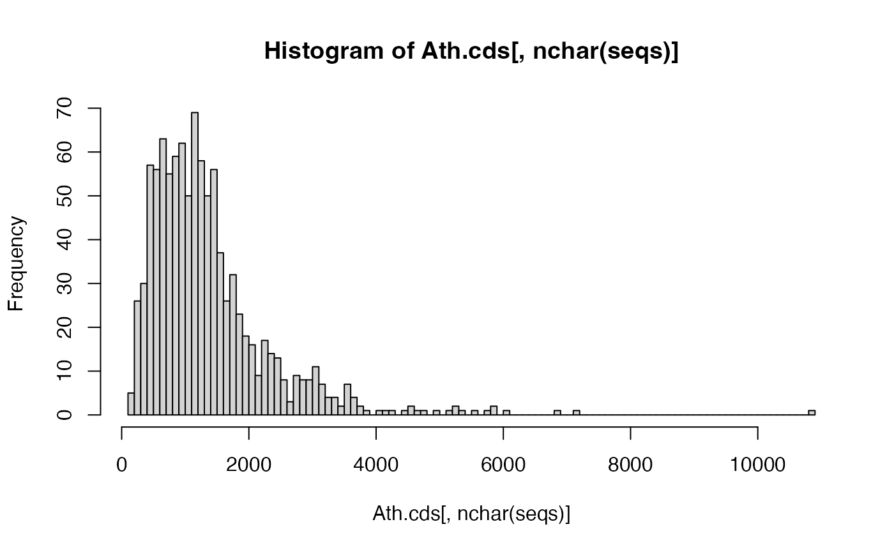

- 1. Getting started with BLAST
- 2. Core BLAST+ Functionality
- 3. Perform BLAST+ searches between genomes
Getting Started
The orthologr package provides several interface
functions to perform BLAST searches.
Note: If your goal is orthology inference or dN/dS
estimation, consider using DIAMOND2 instead of
BLAST — it is orders of magnitude faster and is the default aligner in
orthologr. See the Orthology
Inference and dN/dS
Estimation vignettes for details. The functions documented here
(blast(), blast_best(),
blast_rec()) are retained for cases where BLAST output
specifically is needed.
First, users need to make sure that they have BLAST installed on their machine. Please follow these instructions to install BLAST on your machine.
Performing BLAST Searches
The orthologr package stores 20 example genes
(orthologs) between Arabidopsis thaliana and Arabidopsis
lyrata. The following example BLAST search shall illustrate a
simple search with standard parameters provided by the
blast() function.
When running the subsequent functions please make sure you can call
BLAST+ from your console either in the standard PATH or in
case you have BLAST+ installed in a separate folder, please specify the
path argument that can be passed to
blast().
To check whether BLAST+ can be executed from the default
PATH (usr/bin/local on UNIX systems), you can
run:
# check if blast is installed and if yes, what version of blast
system("blastp -version")This should return something like this:
If everything works properly, you can get started with your first BLAST+ search.
Using orthologr to perform BLAST searches
The orthologr packages allows users to perform fast and
easy-to-use BLAST searches between fasta files. These
searches can even be scaled towards genome and proteome comparisons.
The blast() function
The blast() function provides the easiest way to perform
a BLAST search.
#>
#> Attaching package: 'dplyr'#> The following objects are masked from 'package:stats':
#>
#> filter, lag#> The following objects are masked from 'package:base':
#>
#> intersect, setdiff, setequal, union
# performing a BLAST search using blastp (default)
hit_tbl <- blast(query_file = system.file("seqs/ortho_thal_cds.fasta", package = "orthologr"), subject_file = system.file("seqs/ortho_lyra_cds.fasta", package = "orthologr"))#> Running blastp: 2.17.0+ ...
# look at results
glimpse(hit_tbl)#> Rows: 20
#> Columns: 21
#> $ query_id <chr> "AT1G01010.1", "AT1G01020.1", "AT1G01030.1", "AT1G01040.1", "AT1G01050.1", "AT1G01060.3", "AT1G01070.1", "AT1G01080.1", "AT1G01090.1", "AT1G01110.2", "AT1G01120.1", "AT1G01140.3", "AT1G01150.1", "AT1G01160.1", "AT1G01170.2", "AT1G01180.1", "AT1G01190.1", "AT1G01200.1", "AT1G01210.1", "AT1G01220.1"
#> $ subject_id <chr> "333554|PACid:16033839", "470181|PACid:16064328", "470180|PACid:16054974", "333551|PACid:16057793", "909874|PACid:16064489", "470177|PACid:16043374", "918864|PACid:16052578", "909871|PACid:16053217", "470171|PACid:16052860", "333544|PACid:16034284", "918858|PACid:16049140", "470161|PACid:16036015", "918855|PACid:16037307", "918854|PACid:16044153", "311317|PACid:16052302", "909860|PACid:16056125", "311315|PACid:16059488", "470156|PACid:16041002", "311313|PACid:16057125", "470155|PACid:16047984"
#> $ perc_identity <dbl> 73.987, 91.057, 95.543, 91.980, 100.000, 89.506, 95.082, 90.333, 96.774, 93.561, 99.244, 98.455, 72.632, 84.916, 85.567, 92.581, 94.184, 95.798, 95.327, 96.686
#> $ num_ident_matches <int> 347, 224, 343, 1812, 213, 580, 348, 271, 420, 494, 525, 446, 207, 152, 83, 287, 502, 228, 102, 1021
#> $ alig_length <int> 469, 246, 359, 1970, 213, 648, 366, 300, 434, 528, 529, 453, 285, 179, 97, 310, 533, 238, 107, 1056
#> $ mismatches <int> 80, 22, 12, 85, 0, 58, 14, 22, 8, 34, 4, 6, 68, 19, 0, 20, 30, 10, 5, 35
#> $ gap_openings <int> 8, 0, 2, 10, 0, 5, 2, 2, 3, 0, 0, 1, 3, 2, 1, 1, 1, 0, 0, 0
#> $ n_gaps <int> 42, 0, 4, 73, 0, 10, 4, 7, 6, 0, 0, 1, 10, 8, 14, 3, 1, 0, 0, 0
#> $ pos_match <int> 370, 231, 346, 1853, 213, 601, 351, 279, 425, 507, 527, 448, 234, 157, 83, 296, 518, 233, 105, 1037
#> $ ppos <dbl> 78.89, 93.90, 96.38, 94.06, 100.00, 92.75, 95.90, 93.00, 97.93, 96.02, 99.62, 98.90, 82.11, 87.71, 85.57, 95.48, 97.19, 97.90, 98.13, 98.20
#> $ q_start <int> 1, 1, 1, 6, 1, 1, 1, 1, 1, 1, 1, 1, 5, 4, 2, 1, 1, 1, 1, 1
#> $ q_end <int> 430, 246, 359, 1910, 213, 646, 366, 294, 429, 528, 529, 452, 289, 175, 84, 307, 533, 238, 107, 1056
#> $ q_len <int> 430, 246, 359, 1910, 213, 646, 366, 294, 429, 528, 529, 452, 346, 196, 84, 479, 536, 238, 107, 1056
#> $ qcov <dbl> 100, 100, 100, 99, 100, 100, 100, 100, 100, 100, 100, 100, 82, 88, 99, 64, 99, 100, 100, 100
#> $ qcovhsp <dbl> 100, 100, 100, 99, 100, 100, 100, 100, 100, 100, 100, 100, 82, 88, 99, 64, 99, 100, 100, 100
#> $ s_start <int> 1, 1, 1, 2, 1, 1, 1, 1, 1, 1, 1, 1, 16, 2, 4, 1, 6, 1, 1, 1
#> $ s_end <int> 466, 246, 355, 1963, 213, 640, 362, 299, 433, 528, 529, 453, 290, 179, 100, 310, 537, 238, 107, 1056
#> $ s_len <int> 466, 246, 355, 1963, 213, 640, 362, 299, 433, 528, 529, 453, 294, 225, 100, 316, 540, 238, 107, 1056
#> $ evalue <dbl> 0.00e+00, 8.91e-168, 0.00e+00, 0.00e+00, 3.27e-162, 0.00e+00, 0.00e+00, 1.21e-180, 0.00e+00, 0.00e+00, 0.00e+00, 0.00e+00, 4.13e-152, 2.39e-95, 1.18e-55, 0.00e+00, 0.00e+00, 3.85e-174, 1.81e-77, 0.00e+00
#> $ bit_score <dbl> 627, 454, 698, 3704, 437, 1037, 696, 491, 859, 972, 1092, 918, 421, 268, 158, 576, 1036, 470, 215, 2106
#> $ score_raw <dbl> 1617, 1169, 1801, 9604, 1125, 2681, 1797, 1264, 2220, 2512, 2825, 2372, 1082, 685, 400, 1484, 2679, 1209, 547, 5456As you can see, the hit table shows the output of the BLAST+ search.
The blast() function runs blastp as default
BLAST+ algorithm. Different BLAST+ algorithms can be selected by
specifying the blast_algorithm argument,
e.g. blast_algorithm = "tblastn". See ?blast
for further details. The blast() function returns 21
columns: query_id, subject_id,
perc_identity, num_ident_matches,
alig_length, mismatches,
gap_openings, n_gaps, pos_match,
ppos, q_start, q_end,
q_len, qcov, qcovhsp,
s_start, s_end, s_len,
evalue, bit_score, and
score_raw.
Since blast() stores the hit table returned by BLAST in
a data.table object, you can access each column, using the data.table notation.
In case you need to specify the PATH to BLAST+ please
use the path argument:
# performing a BLAST search using blastp (default)
hit_tbl <- blast(query_file = system.file("seqs/ortho_thal_cds.fasta", package = "orthologr"), subject_file = system.file("seqs/ortho_lyra_cds.fasta", package = "orthologr"), path = "/path/to/blastp")
hit_tbl
# access columns: query_id, subject_id, evalue, and bit_score
dplyr::select(hit_tbl, query_id, subject_id, evalue, bit_score)#> # A tibble: 20 × 4
#> query_id subject_id evalue bit_score
#> <chr> <chr> <dbl> <dbl>
#> 1 AT1G01010.1 333554|PACid:16033839 0 627
#> 2 AT1G01020.1 470181|PACid:16064328 8.91e-168 454
#> 3 AT1G01030.1 470180|PACid:16054974 0 698
#> 4 AT1G01040.1 333551|PACid:16057793 0 3704
#> 5 AT1G01050.1 909874|PACid:16064489 3.27e-162 437
#> 6 AT1G01060.3 470177|PACid:16043374 0 1037
#> 7 AT1G01070.1 918864|PACid:16052578 0 696
#> 8 AT1G01080.1 909871|PACid:16053217 1.21e-180 491
#> 9 AT1G01090.1 470171|PACid:16052860 0 859
#> 10 AT1G01110.2 333544|PACid:16034284 0 972
#> 11 AT1G01120.1 918858|PACid:16049140 0 1092
#> 12 AT1G01140.3 470161|PACid:16036015 0 918
#> 13 AT1G01150.1 918855|PACid:16037307 4.13e-152 421
#> 14 AT1G01160.1 918854|PACid:16044153 2.39e- 95 268
#> 15 AT1G01170.2 311317|PACid:16052302 1.18e- 55 158
#> 16 AT1G01180.1 909860|PACid:16056125 0 576
#> 17 AT1G01190.1 311315|PACid:16059488 0 1036
#> 18 AT1G01200.1 470156|PACid:16041002 3.85e-174 470
#> 19 AT1G01210.1 311313|PACid:16057125 1.81e- 77 215
#> 20 AT1G01220.1 470155|PACid:16047984 0 2106The blast() function also allows you to pass additional
parameters to the BLAST+ search using the blast_params
argument. In the following example, a remote BLAST+ search is
performed.
hit_tbl <- blast(query_file = system.file('seqs/ortho_thal_cds.fasta', package = 'orthologr'),
subject_file = system.file('seqs/ortho_lyra_cds.fasta', package = 'orthologr'),
blast_params = "-qcov_hsp_perc 0.9")
glimpse(hit_tbl)Rows: 20
Columns: 21
$ query_id <chr> "AT1G01010.1", "AT1G01020.1", "AT1G01030.1", "AT…
$ subject_id <chr> "333554|PACid:16033839", "470181|PACid:16064328"…
$ perc_identity <dbl> 73.987, 91.057, 95.543, 91.980, 100.000, 89.506,…
$ num_ident_matches <int> 347, 224, 343, 1812, 213, 580, 348, 271, 420, 49…
$ alig_length <int> 469, 246, 359, 1970, 213, 648, 366, 300, 434, 52…
$ mismatches <int> 80, 22, 12, 85, 0, 58, 14, 22, 8, 34, 4, 6, 68, …
$ gap_openings <int> 8, 0, 2, 10, 0, 5, 2, 2, 3, 0, 0, 1, 3, 2, 1, 1,…
$ n_gaps <int> 42, 0, 4, 73, 0, 10, 4, 7, 6, 0, 0, 1, 10, 8, 14…
$ pos_match <int> 370, 231, 346, 1853, 213, 601, 351, 279, 425, 50…
$ ppos <dbl> 78.89, 93.90, 96.38, 94.06, 100.00, 92.75, 95.90…
$ q_start <int> 1, 1, 1, 6, 1, 1, 1, 1, 1, 1, 1, 1, 5, 4, 2, 1, …
$ q_end <int> 430, 246, 359, 1910, 213, 646, 366, 294, 429, 52…
$ q_len <int> 430, 246, 359, 1910, 213, 646, 366, 294, 429, 52…
$ qcov <dbl> 100, 100, 100, 99, 100, 100, 100, 100, 100, 100,…
$ qcovhsp <dbl> 100, 100, 100, 99, 100, 100, 100, 100, 100, 100,…
$ s_start <int> 1, 1, 1, 2, 1, 1, 1, 1, 1, 1, 1, 1, 16, 2, 4, 1,…
$ s_end <int> 466, 246, 355, 1963, 213, 640, 362, 299, 433, 52…
$ s_len <int> 466, 246, 355, 1963, 213, 640, 362, 299, 433, 52…
$ evalue <dbl> 0.00e+00, 8.91e-168, 0.00e+00, 0.00e+00, 3.27e-1…
$ bit_score <dbl> 627, 454, 698, 3704, 437, 1037, 696, 491, 859, 9…
$ score_raw <dbl> 1617, 1169, 1801, 9604, 1125, 2681, 1797, 1264, …In all cases the default e-value BLAST+ searches is
1E-5 and the default blast_algorithm is
blastp.
Since BLAST+ searches can be computationally expensive, it is
possible to specify the comp_cores argument when working
with an multicore machine.
# BLAST computations using the comp_cores parameter: here with 2 cores
blast(query_file = system.file("seqs/ortho_thal_cds.fasta", package = "orthologr"), subject_file = system.file("seqs/ortho_lyra_cds.fasta", package = "orthologr"), comp_cores = 2)#> Running blastp: 2.17.0+ ...#> # A tibble: 20 × 21
#> query_id subject_id perc_identity num_ident_matches alig_length mismatches gap_openings n_gaps pos_match ppos q_start q_end q_len qcov qcovhsp s_start s_end s_len evalue bit_score score_raw
#> <chr> <chr> <dbl> <int> <int> <int> <int> <int> <int> <dbl> <int> <int> <int> <dbl> <dbl> <int> <int> <int> <dbl> <dbl> <dbl>
#> 1 AT1G01010.1 333554|PACid:16033839 74.0 347 469 80 8 42 370 78.9 1 430 430 100 100 1 466 466 0 627 1617
#> 2 AT1G01020.1 470181|PACid:16064328 91.1 224 246 22 0 0 231 93.9 1 246 246 100 100 1 246 246 8.91e-168 454 1169
#> 3 AT1G01030.1 470180|PACid:16054974 95.5 343 359 12 2 4 346 96.4 1 359 359 100 100 1 355 355 0 698 1801
#> 4 AT1G01040.1 333551|PACid:16057793 92.0 1812 1970 85 10 73 1853 94.1 6 1910 1910 99 99 2 1963 1963 0 3704 9604
#> 5 AT1G01050.1 909874|PACid:16064489 100 213 213 0 0 0 213 100 1 213 213 100 100 1 213 213 3.27e-162 437 1125
#> 6 AT1G01060.3 470177|PACid:16043374 89.5 580 648 58 5 10 601 92.8 1 646 646 100 100 1 640 640 0 1037 2681
#> 7 AT1G01070.1 918864|PACid:16052578 95.1 348 366 14 2 4 351 95.9 1 366 366 100 100 1 362 362 0 696 1797
#> 8 AT1G01080.1 909871|PACid:16053217 90.3 271 300 22 2 7 279 93 1 294 294 100 100 1 299 299 1.21e-180 491 1264
#> 9 AT1G01090.1 470171|PACid:16052860 96.8 420 434 8 3 6 425 97.9 1 429 429 100 100 1 433 433 0 859 2220
#> 10 AT1G01110.2 333544|PACid:16034284 93.6 494 528 34 0 0 507 96.0 1 528 528 100 100 1 528 528 0 972 2512
#> 11 AT1G01120.1 918858|PACid:16049140 99.2 525 529 4 0 0 527 99.6 1 529 529 100 100 1 529 529 0 1092 2825
#> 12 AT1G01140.3 470161|PACid:16036015 98.5 446 453 6 1 1 448 98.9 1 452 452 100 100 1 453 453 0 918 2372
#> 13 AT1G01150.1 918855|PACid:16037307 72.6 207 285 68 3 10 234 82.1 5 289 346 82 82 16 290 294 4.13e-152 421 1082
#> 14 AT1G01160.1 918854|PACid:16044153 84.9 152 179 19 2 8 157 87.7 4 175 196 88 88 2 179 225 2.39e- 95 268 685
#> 15 AT1G01170.2 311317|PACid:16052302 85.6 83 97 0 1 14 83 85.6 2 84 84 99 99 4 100 100 1.18e- 55 158 400
#> 16 AT1G01180.1 909860|PACid:16056125 92.6 287 310 20 1 3 296 95.5 1 307 479 64 64 1 310 316 0 576 1484
#> 17 AT1G01190.1 311315|PACid:16059488 94.2 502 533 30 1 1 518 97.2 1 533 536 99 99 6 537 540 0 1036 2679
#> 18 AT1G01200.1 470156|PACid:16041002 95.8 228 238 10 0 0 233 97.9 1 238 238 100 100 1 238 238 3.85e-174 470 1209
#> 19 AT1G01210.1 311313|PACid:16057125 95.3 102 107 5 0 0 105 98.1 1 107 107 100 100 1 107 107 1.81e- 77 215 547
#> 20 AT1G01220.1 470155|PACid:16047984 96.7 1021 1056 35 0 0 1037 98.2 1 1056 1056 100 100 1 1056 1056 0 2106 5456The query_file and subject_file arguments
specify the path to the corresponding fasta files storing the
CDS files, amino acid files, or
genome files of the query organism and subject organism of
interest. Make sure that when using CDSfiles,
amino acid files, or genome files the
corresponding argument seq_type must be adapted according
to the input data format.
Use :
-
CDSfiles ->seq_type = "cds" -
amino acidfiles ->seq_type = "protein" -
genomefiles ->seq_type = "dna"
The format argument specifies the input file format,
e.g. “fasta” or “gbk”. The blast_algorithm argument
specifies the BLAST program (algorithm) that shall be used to perform
BLAST searches, e.g. “blastp”,“blastn”,“tblastn”,etc. Again, the
eval argument defines the default e-value that shall be
chosen as best hit threshold.
Using the split-apply-combine strategy for a BLAST hit table
All blast functions implemented in
orthologr can easily be processed using the split-apply-combine
strategy to detect for example one-to-one,
one-to-many, and many-to-many gene homology
relationships.
Here a simple example:
library(dplyr)
# perform a blastp search of 20 A. thaliana genes against 1000 A. lyrata genes
hit_tbl <- blast(query_file = system.file("seqs/ortho_thal_cds.fasta", package = "orthologr"), subject_file = system.file("seqs/ortho_lyra_cds_1000.fasta", package = "orthologr"))#> Running blastp: 2.17.0+ ...#> There seem to be 12 coding sequences in your input dataset which cannot be properly divided in base triplets, because their sequence length cannot be divided by 3.#> A fasta file storing all corrupted coding sequences for inspection was generated and stored at '/Users/sodai/Desktop/projects/R/orthologr/vignettes/ortho_lyra_cds_1000.fasta_corrupted_cds_seqs.fasta'.#> #> You chose option 'delete_corrupt_cds = TRUE', thus corrupted coding sequences were removed.If after consulting the file 'ortho_lyra_cds_1000.fasta_corrupted_cds_seqs.fasta' you still wish to retain all coding sequences please specify the argument 'delete_corrupt_cds = FALSE'.#>
# determine 'one-to-many' and 'one-to-one' gene relationships
rel_hit_tbl <- summarize(group_by(hit_tbl, query_id), n_genes = n())
# look at results
rel_hit_tbl#> # A tibble: 20 × 2
#> query_id n_genes
#> <chr> <int>
#> 1 AT1G01010.1 4
#> 2 AT1G01020.1 1
#> 3 AT1G01030.1 1
#> 4 AT1G01040.1 1
#> 5 AT1G01050.1 1
#> 6 AT1G01060.3 2
#> 7 AT1G01070.1 3
#> 8 AT1G01080.1 5
#> 9 AT1G01090.1 1
#> 10 AT1G01110.2 1
#> 11 AT1G01120.1 3
#> 12 AT1G01140.3 36
#> 13 AT1G01150.1 1
#> 14 AT1G01160.1 1
#> 15 AT1G01170.2 1
#> 16 AT1G01180.1 1
#> 17 AT1G01190.1 6
#> 18 AT1G01200.1 7
#> 19 AT1G01210.1 1
#> 20 AT1G01220.1 1Now you can sort genes into classes: one-to-one and
one-to-many.
# classify into 'one-to-one' relationships
one_to_one <- filter(rel_hit_tbl, n_genes == 1)
# classify into 'one-to-many' relationships
one_to_many <- filter(rel_hit_tbl, n_genes > 1)
# look at one_to_one
one_to_one#> # A tibble: 12 × 2
#> query_id n_genes
#> <chr> <int>
#> 1 AT1G01020.1 1
#> 2 AT1G01030.1 1
#> 3 AT1G01040.1 1
#> 4 AT1G01050.1 1
#> 5 AT1G01090.1 1
#> 6 AT1G01110.2 1
#> 7 AT1G01150.1 1
#> 8 AT1G01160.1 1
#> 9 AT1G01170.2 1
#> 10 AT1G01180.1 1
#> 11 AT1G01210.1 1
#> 12 AT1G01220.1 1
# look at one_to_many
one_to_many#> # A tibble: 8 × 2
#> query_id n_genes
#> <chr> <int>
#> 1 AT1G01010.1 4
#> 2 AT1G01060.3 2
#> 3 AT1G01070.1 3
#> 4 AT1G01080.1 5
#> 5 AT1G01120.1 3
#> 6 AT1G01140.3 36
#> 7 AT1G01190.1 6
#> 8 AT1G01200.1 7Now we can treat classes: one_to_one and
one_to_many differently:
Working with one-to-one hits
We can now retrieve the blast hit entries for the one-to-one hits by
joining the tables one_to_one and hit_tbl.
# look at the evalue, perc_identity, and alig_length of one_to_one genes
oo_genes <- dplyr::inner_join(one_to_one, hit_tbl, by = "query_id")
oo_genes#> # A tibble: 12 × 22
#> query_id n_genes subject_id perc_identity num_ident_matches alig_length mismatches gap_openings n_gaps pos_match ppos q_start q_end q_len qcov qcovhsp s_start s_end s_len evalue bit_score score_raw
#> <chr> <int> <chr> <dbl> <int> <int> <int> <int> <int> <int> <dbl> <int> <int> <int> <dbl> <dbl> <int> <int> <int> <dbl> <dbl> <dbl>
#> 1 AT1G01020.1 1 470181|PACid:16064328 91.1 224 246 22 0 0 231 93.9 1 246 246 100 100 1 246 246 4.33e-166 454 1169
#> 2 AT1G01030.1 1 470180|PACid:16054974 95.5 343 359 12 2 4 346 96.4 1 359 359 100 100 1 355 355 0 698 1801
#> 3 AT1G01040.1 1 333551|PACid:16057793 92.0 1812 1970 85 10 73 1853 94.1 6 1910 1910 99 99 2 1963 1963 0 3704 9604
#> 4 AT1G01050.1 1 909874|PACid:16064489 100 213 213 0 0 0 213 100 1 213 213 100 100 1 213 213 1.59e-160 437 1125
#> 5 AT1G01090.1 1 470171|PACid:16052860 96.8 420 434 8 3 6 425 97.9 1 429 429 100 100 1 433 433 0 859 2220
#> 6 AT1G01110.2 1 333544|PACid:16034284 93.6 494 528 34 0 0 507 96.0 1 528 528 100 100 1 528 528 0 972 2512
#> 7 AT1G01150.1 1 918855|PACid:16037307 72.6 207 285 68 3 10 234 82.1 5 289 346 82 82 16 290 294 2.01e-150 421 1082
#> 8 AT1G01160.1 1 918854|PACid:16044153 84.9 152 179 19 2 8 157 87.7 4 175 196 88 88 2 179 225 1.16e- 93 268 685
#> 9 AT1G01170.2 1 311317|PACid:16052302 85.6 83 97 0 1 14 83 85.6 2 84 84 99 99 4 100 100 5.75e- 54 158 400
#> 10 AT1G01180.1 1 909860|PACid:16056125 92.6 287 310 20 1 3 296 95.5 1 307 479 64 64 1 310 316 0 576 1484
#> 11 AT1G01210.1 1 311313|PACid:16057125 95.3 102 107 5 0 0 105 98.1 1 107 107 100 100 1 107 107 8.80e- 76 215 547
#> 12 AT1G01220.1 1 470155|PACid:16047984 96.7 1021 1056 35 0 0 1037 98.2 1 1056 1056 100 100 1 1056 1056 0 2106 5456This way, users will have all blast information of
one_to_one hits available.
A real world application: Homology Inference
Using the oo_genes dataset above, users can use this
one_to_one hits strategy to detect homologous genes between
species.
For example, we could restrict one_to_one hits to
fulfill certain (stringent) criteria to identify as a homologous hit.
Here we choose the following parameter constellation to achieve this
goal: one_to_one genes must have a minimum
alignment length of 300, a
perc_identity of > 80 percent and an
e-value < 1E-5.
# filter for 'homologous' hits
true_orthologs <- dplyr::filter(oo_genes, evalue < 1e-05, perc_identity > 80, alig_length > 300)
# look at results
dplyr::select(true_orthologs, query_id, subject_id, evalue, perc_identity, alig_length)#> # A tibble: 6 × 5
#> query_id subject_id evalue perc_identity alig_length
#> <chr> <chr> <dbl> <dbl> <int>
#> 1 AT1G01030.1 470180|PACid:16054974 0 95.5 359
#> 2 AT1G01040.1 333551|PACid:16057793 0 92.0 1970
#> 3 AT1G01090.1 470171|PACid:16052860 0 96.8 434
#> 4 AT1G01110.2 333544|PACid:16034284 0 93.6 528
#> 5 AT1G01180.1 909860|PACid:16056125 0 92.6 310
#> 6 AT1G01220.1 470155|PACid:16047984 0 96.7 1056This way we could filter out a high confidence set of homologous
genes from the one_to_one class of genes.
In reality most homology inference programs and methods perform way more complicated and sophisticated analyses to distinguish true orthologs from true paralogs (in-paralogs, out-paralogs, etc.). These subsequent analyses can also be performed using the above introduced split-apply-combine strategy.
Note, that you can perform self-BLAST searches
blast(query,query) and blast(subject,subject)
to distinguish between orthologous and paralogous genes.
Now we continue with the one_to_many class of genes.
Working with one-to-many hits
Here we want to address the question how to deal with multiple hits
returned by BLAST+.
Again we investigate all one_to_many genes:
# look at results
one_to_many#> # A tibble: 8 × 2
#> query_id n_genes
#> <chr> <int>
#> 1 AT1G01010.1 4
#> 2 AT1G01060.3 2
#> 3 AT1G01070.1 3
#> 4 AT1G01080.1 5
#> 5 AT1G01120.1 3
#> 6 AT1G01140.3 36
#> 7 AT1G01190.1 6
#> 8 AT1G01200.1 7When looking at gene_id AT1G01200.1 we see that it was
found 7 times in the corresponding subject set of A.
lyrata.
# look at all 7 hits found
dplyr::select(dplyr::filter(hit_tbl, query_id == "AT1G01200.1"), query_id, subject_id, evalue, perc_identity, alig_length)#> # A tibble: 7 × 5
#> query_id subject_id evalue perc_identity alig_length
#> <chr> <chr> <dbl> <dbl> <int>
#> 1 AT1G01200.1 470156|PACid:16041002 1.87e-172 95.8 238
#> 2 AT1G01200.1 910431|PACid:16035207 2.63e- 75 53.0 219
#> 3 AT1G01200.1 918732|PACid:16054958 1.07e- 51 44.6 193
#> 4 AT1G01200.1 919287|PACid:16060536 4.42e- 70 58.1 179
#> 5 AT1G01200.1 919355|PACid:16050170 2.40e- 73 53.3 212
#> 6 AT1G01200.1 919721|PACid:16036935 2.63e- 81 59.3 204
#> 7 AT1G01200.1 919852|PACid:16055066 4.02e- 7 24.0 154Now we have to decide which hit shall be considered as potential homolog.
In this example subject_id
470156|PACid:16041002 has the highest
perc_identity as well as the lowest e-value
1.87e-172. So a straightforward approach would be to choose
subject gene 470156|PACid:16041002 as potential ortholog of
query gene AT1G01200.1.
We can validate this approach by running a reciprocal best hit search
with blast_rec()and compare the output of gene
AT1G01200.1 with our choice
470156|PACid:16041002.
A reciprocal best hit blast approach denotes the search strategy in which query sequences are blasted in one direction to detect matches in subject sequences and then inversely subject sequences are blasted in the other direction to detect matches in the query sequences. Only when both blast seaches in both directions result in the same hit pair: BLAST(A,B) = BLAST(B,A) the hit will be considered as true ortholog relationship.
# run blast best reciprocal hit function
rbh_hit_tbl <- blast_rec(query_file = system.file("seqs/ortho_thal_cds.fasta", package = "orthologr"), subject_file = system.file("seqs/ortho_lyra_cds_1000.fasta", package = "orthologr"))#> Running blastp: 2.17.0+ ...#> There seem to be 12 coding sequences in your input dataset which cannot be properly divided in base triplets, because their sequence length cannot be divided by 3.#> A fasta file storing all corrupted coding sequences for inspection was generated and stored at '/Users/sodai/Desktop/projects/R/orthologr/vignettes/ortho_lyra_cds_1000.fasta_corrupted_cds_seqs.fasta'.#> #> You chose option 'delete_corrupt_cds = TRUE', thus corrupted coding sequences were removed.If after consulting the file 'ortho_lyra_cds_1000.fasta_corrupted_cds_seqs.fasta' you still wish to retain all coding sequences please specify the argument 'delete_corrupt_cds = FALSE'.#> #> Running blastp: 2.17.0+ ...#> There seem to be 12 coding sequences in your input dataset which cannot be properly divided in base triplets, because their sequence length cannot be divided by 3.#> A fasta file storing all corrupted coding sequences for inspection was generated and stored at '/Users/sodai/Desktop/projects/R/orthologr/vignettes/ortho_lyra_cds_1000.fasta_corrupted_cds_seqs.fasta'.#> #> You chose option 'delete_corrupt_cds = TRUE', thus corrupted coding sequences were removed.If after consulting the file 'ortho_lyra_cds_1000.fasta_corrupted_cds_seqs.fasta' you still wish to retain all coding sequences please specify the argument 'delete_corrupt_cds = FALSE'.#>
# look at results
dplyr::select(rbh_hit_tbl, query_id, subject_id, evalue, perc_identity, alig_length)#> # A tibble: 20 × 5
#> # Groups: query_id [20]
#> query_id subject_id evalue perc_identity alig_length
#> <chr> <chr> <dbl> <dbl> <int>
#> 1 AT1G01010.1 333554|PACid:16033839 0 74.0 469
#> 2 AT1G01020.1 470181|PACid:16064328 4.33e-166 91.1 246
#> 3 AT1G01030.1 470180|PACid:16054974 0 95.5 359
#> 4 AT1G01040.1 333551|PACid:16057793 0 92.0 1970
#> 5 AT1G01050.1 909874|PACid:16064489 1.59e-160 100 213
#> 6 AT1G01060.3 470177|PACid:16043374 0 89.5 648
#> 7 AT1G01070.1 918864|PACid:16052578 0 95.1 366
#> 8 AT1G01080.1 909871|PACid:16053217 5.90e-179 90.3 300
#> 9 AT1G01090.1 470171|PACid:16052860 0 96.8 434
#> 10 AT1G01110.2 333544|PACid:16034284 0 93.6 528
#> 11 AT1G01120.1 918858|PACid:16049140 0 99.2 529
#> 12 AT1G01140.3 470161|PACid:16036015 0 98.5 453
#> 13 AT1G01150.1 918855|PACid:16037307 2.01e-150 72.6 285
#> 14 AT1G01160.1 918854|PACid:16044153 1.16e- 93 84.9 179
#> 15 AT1G01170.2 311317|PACid:16052302 5.75e- 54 85.6 97
#> 16 AT1G01180.1 909860|PACid:16056125 0 92.6 310
#> 17 AT1G01190.1 311315|PACid:16059488 0 94.2 533
#> 18 AT1G01200.1 470156|PACid:16041002 1.87e-172 95.8 238
#> 19 AT1G01210.1 311313|PACid:16057125 8.80e- 76 95.3 107
#> 20 AT1G01220.1 470155|PACid:16047984 0 96.7 1056When we now look at gene AT1G01200.1 we find that after
an reciprocal blast approach subject gene
470181|PACid:16064328 rather than the subject gene
470156|PACid:16041002 (= result of unidirectional blast)
has been detected as potential ortholog. The example illustrates the
importance of using bidirectional blast to determine orthology
relationships.
An alternative analysis that can be performed with these three candidate subject genes is the following:
# read CDS sequences of the 20 example query genes of A. thaliana
Ath.cds <- orthologr::read.cds(file = system.file("seqs/ortho_thal_cds.fasta", package = "orthologr"), format = "fasta")
# read CDS sequences of the 1000 example subject genes of A. lyrata
Aly.cds <- orthologr::read.cds(file = system.file("seqs/ortho_lyra_cds_1000.fasta", package = "orthologr"), format = "fasta")#> There seem to be 12 coding sequences in your input dataset which cannot be properly divided in base triplets, because their sequence length cannot be divided by 3.#> A fasta file storing all corrupted coding sequences for inspection was generated and stored at '/Users/sodai/Desktop/projects/R/orthologr/vignettes/ortho_lyra_cds_1000.fasta_corrupted_cds_seqs.fasta'.#> #> You chose option 'delete_corrupt_cds = TRUE', thus corrupted coding sequences were removed.If after consulting the file 'ortho_lyra_cds_1000.fasta_corrupted_cds_seqs.fasta' you still wish to retain all coding sequences please specify the argument 'delete_corrupt_cds = FALSE'.#>
# show the sequence of gene AT1G01070.1
Ath.cds["AT1G01070.1", seqs]#> [1] "atggctggagatatgcaaggagtgagagtagtagaaaaatattcaccggtcatagtgatggtgatgtcaaatgtagcgatgggttcggtgaatgcacttgtgaagaaagctcttgatgttggtgtgaaccatatggtcattggtgcttatcgaatggctatttccgctttaattttggttccctttgcctatgtcttggaaaggaaaacaagaccacaaataacgtttaggctaatggtcgatcatttcgtcagtggccttctcggggcgagtttgatgcagtttttctttttgcttggtctgtcgtacacgtcagcaactgtttcgtgtgctttggtaagcatgttgcctgcaatcaccttcgctttggcccttattttcaggactgaaaatgtgaagattctaaagaccaaagcaggaatgttgaaggtgattggaactttgatctgtataagtggagctttgttcttaacattttacaaaggcccacaaatatcaaactctcactctcactctcacggtggggcttcccacaacaacaacgatcaagacaaggccaataattggcttcttggatgtctttatttaaccataggaacagtgttgctatctctatggatgttgtttcaagggactttaagtattaagtacccttgcaaatactcgagcacttgtcttatgtcaattttcgcggcatttcaatgtgctctcttgagcctttacaagagcagagacgttaatgattggatcatagatgatagattcgttatcaccgtcatcatatacgctggagtggtaggacaagcaatgacgacggttgcaacaacatgggggattaaaaaattaggagctgtgttcgcatcggcgtttttcccacttactctcatttcggctactctatttgatttcctcattttacacactcctttataccttggaagtgtgattggatcactagtgaccataacgggtctctacatgttcttgtgggggaagaacaaagaaacggaatcatcaactgcattgtcttcaggaatggataacgaagctcaatatactactcctaataaggataacgactctaagtcgcccgtttaa"Now users can perform a global alignment between the CDS sequences of
AT1G01070.1 and the three subject genes as follows:
#> Loading required package: BiocGenerics#> Loading required package: generics#>
#> Attaching package: 'generics'#> The following object is masked from 'package:dplyr':
#>
#> explain#> The following objects are masked from 'package:base':
#>
#> as.difftime, as.factor, as.ordered, intersect, is.element, setdiff, setequal, union#>
#> Attaching package: 'BiocGenerics'#> The following object is masked from 'package:dplyr':
#>
#> combine#> The following objects are masked from 'package:stats':
#>
#> IQR, mad, sd, var, xtabs#> The following objects are masked from 'package:base':
#>
#> anyDuplicated, aperm, append, as.data.frame, basename, cbind, colnames, dirname, do.call, duplicated, eval, evalq, Filter, Find, get, grep, grepl, is.unsorted, lapply, Map, mapply, match, mget, order, paste, pmax, pmax.int, pmin, pmin.int, Position, rank, rbind, Reduce, rownames, sapply, saveRDS, table, tapply, unique, unsplit, which.max, which.min#> Loading required package: S4Vectors#> Loading required package: stats4#>
#> Attaching package: 'S4Vectors'#> The following objects are masked from 'package:dplyr':
#>
#> first, rename#> The following object is masked from 'package:utils':
#>
#> findMatches#> The following objects are masked from 'package:base':
#>
#> expand.grid, I, unname#> Loading required package: IRanges#>
#> Attaching package: 'IRanges'#> The following objects are masked from 'package:dplyr':
#>
#> collapse, desc, slice#> Loading required package: XVector#> Loading required package: Seqinfo#>
#> Attaching package: 'Biostrings'#> The following object is masked from 'package:base':
#>
#> strsplit
library(pwalign)
# perform 3 global alignments between: AT1G01070.1 and 918864|PACid:16052578, 919693|PACid:16048878, 919961|PACid:16062329
sapply(Aly.cds[unlist(dplyr::select(dplyr::filter(hit_tbl, query_id == "AT1G01070.1"), subject_id)), seqs], pairwiseAlignment, pattern = Ath.cds["AT1G01070.1", seqs], type = "global")#> $...
#> Global PairwiseAlignmentsSingleSubject (1 of 1)
#> pattern: atggctggagatatgcaaggagtgagagtagtagaaaaatattcaccggtcatagtgatggtgatgtcaaatgtagcgatgggttcggtgaatgcacttgtgaagaaagctcttgatgttggtgtgaaccatatggtcattggtgcttatcgaatggctatttccgctttaattttggttccctttgcctatgtcttggaaaggaaaacaagaccacaaataacgtttaggctaatggtcgatcatttcgtcagtggccttctcggggcgagtttgatgcagtttttctttttgcttggtctgtcgtacacgtcagcaactgtttcgtgtgctttggtaagcatgttgcctgcaatcaccttcgctttg...agagacgttaatgattggatcatagatgatagattcgttatcaccgtcatcatatacgctggagtggtaggacaagcaatgacgacggttgcaacaacatgggggattaaaaaattaggagctgtgttcgcatcggcgtttttcccacttactctcatttcggctactctatttgatttcctcattttacacactcctttataccttggaagtgtgattggatcactagtgaccataacgggtctctacatgttcttgtgggggaagaacaaagaaacggaatcatcaactgcattgtcttcaggaatggataacgaagctcaatatactactcctaataaggataacgactctaagtcgcccgtttaa
#> subject: atgggtgaaggtatgattggagtgagagtagtagaaaaatattcaccggtcatagtgatggtgatgtcaaacgtagcgatgggttcggtgaatgcacttgtgaagaaagctcttgatgttggtgtgaaccatatggtcattggtgcttatcgaatggctatttccgctttcattttggttccctttgcctatatcttggaaaggaaaacaagaccacagataacgtttaggctaatgatcgatcatttcgtcagtggccttctcggggcgagtttgatgcaatttttctttttgcttggtctgtcgtacacgtcagcaactgtttcgtgtgctttggtaagcatgttgcctgcaatcaccttcgctttg...agagacgttaatgattggatcatcgatgatagattcgtgatcaccgtcatcatatacgctggagtggtaggacaagcaatgtcgacggtagcaacaacatgggggataaagaaattaggagctgtgttcgcatcggcattttttccacttactctcatttcggctactctatttgatttcctaattttacacactcctttataccttggaagtgtgattggatcactagtgaccataacgggtctctacatgtttttgtggggcaagaacaaagaaacggaatcatcaactgcattgtcttctcgaatggataatgaagctcaaaata------ttaataaggataacgactctaagtcgcccgtttaa
#> score: 1768.965
#>
#> $...
#> Global PairwiseAlignmentsSingleSubject (1 of 1)
#> pattern: atggctgga---gatatgcaaggagtgagagtagtagaaaaatattcaccggtcatagtgatggtgatgt--caaatgtagcgatgggttcggtga-atgcactt---gt-gaagaaagctcttgatgttggtgtgaaccatatggtcattggtgcttatcgaatggctattt-ccgctttaattttggttccctttgcctatgtcttggaaaggaaaacaagaccacaaataacgtttaggctaatggtcgatcatttcgtcagtggccttctcggggcgagtttgatgcagtttttctttttgcttggtctgtcgtacacgtcagcaactgtttcgtgtgctttgg-taagcatgttgcctgcaatc...gctggagtggtaggacaagcaatgacgacggttgcaacaacatgggggattaaaaaattaggagctgtgttcgcatcggcgtttttc--ccacttactctcatttcggctactctattt---gatttcctcattttacacactc-ctttataccttggaagtgtgattggatcactagtgaccataacgggtctctacatgttcttgtgggggaagaaca---------------------aagaaacgga--------atcatcaactgcattgtctt--caggaatgga--taacgaagctc---aat--atactac---tcctaataaggataa------cgac----tctaagtcgcccgtttaa
#> subject: atggctaaatcagatatgc------tg---------------------ccgttcttggcgatggtgttggtgcaaatc-------ggctacgcaggcatgaacattacgtcgaagatggctatggaagccggcatgaagcctctcattctggtcgcttatcgccaga-tatttgccactatcgccacttttccggtcgcattttttctcgaacggaagacaagaccaaagatcacacttagggttcttgttcaagtcttcttctgctccattactggtgcgactggaaaccaagtgctatacttcataggacttcagaattcatctccgaccattgcttgtgccttaactaatc-tcttaccagcggtc...gccggagtggtggcgtctgcgttagcgttctgcctaatgtcatgggctatgcagaggaaaggtcctctgtacgtctctg---ttttcagccctttact-tctggtagtagtcgccattttcagctgggctcttcttgaagagaaactctacacc--ggcacgtttatgggatcagcacttgtggttattggtctctatggcgtattgtgggggaaagacagagaggtgagtgagaaggaagaagaaagggagaaggtgaaacaacaacaacgtagtaaaggcaagagtgaaagtaatgaagatattgaatcgagattaccggtcgcaagtagtggaaatggttccacaaggtctatatcgcc---ttaa
#> score: -2318.726
#>
#> $...
#> Global PairwiseAlignmentsSingleSubject (1 of 1)
#> pattern: atggctggagatatgcaaggagtgagagtagtagaaaaatattcaccggtcatagtgatggtgatgtcaaatgtagcgatgggttcggtgaatgcacttgtgaagaaagctcttgatgttggtgtgaaccatatggtcattggtgcttatcgaatggctatttccgctttaattttggttccctttgcctatgtcttggaaaggaaaacaagaccacaaataacgtttaggctaatggtcgatcatttcgtcagtggccttctcggggcgagtttgatgcagtttttctttttgcttggtctgtcgtacacgtcagcaactgtttcgtgtgctttggtaagcatgttgcctgcaatcaccttcgctttg...agagacgttaatgattggatcatagatgatagattcgttatcaccgtcatcatatacgctggagtggtaggacaagcaatgacgacggttgcaacaacatgggggattaaaaaattaggagctgtgttcgcatcggcgtttttcccacttactctcatttcggctactctatttgatttcctcattttacacactcctttataccttggaagtgtgattggatcactagtgaccataacgggtctctacatgttcttgtgggggaagaacaaagaaacggaatcatcaactgcattgtcttcaggaatggataacgaagctcaatatactactcctaataaggataacgactctaagtcgcccgtttaa
#> subject: atgagtgaggatatgggaggagtgaaagtagtctcaaaatggccaccggttatagttatggtggcatcacaagtagcgatgggttcggtgaatgcacttgtgaagaaagctctcgatgttggtgtgaaccatatgatcgttggtgcttatcgaatggctatttcctcgctcattctggctcctattgcctattttttggaaaggaaaataataccgcaaataacgtttaggctaatggtcgatcatttcatcagtggtttgctcggggcaagtttgatgcaatttttctatttgctgggtctgtcgtatacgtcagcaactgttgcgtgtgctttggtaagcttgatgcctgcaatcaccttcgctttc...agagatcttaaacattggatcatcgatgatggatttgtgatcggtgtcatcgtatatgctggagtgataggacaagcaatgtcgactgtagcagcgacatggggaataacgagattaggagctgttttcgcatcagcaattatgccagtttctctaatttcggctactctattcgatttcctaatcttagacactcctttatacctcggaagtgtgattggatcagtagtaacaataataggtctttacgtgttcttgtggggtaagaacaaagaaatggaagcat---------------------------------------------------------------------------------aa
#> score: 486.462Note: To obtain the score value, you need to specify
the scoreOnly = TRUE in the pairwiseAlignment
function.
As you can see, subject gene 918864|PACid:16052578 also
has the highest global alignment score 1768.965 based on
the Needleman-Wunsch algorithm. This strategy might help you to
differentiate between border line cases.
The examples shown above shall demonstrate the use cases that can be
performed using the blast functions implemented in
orthologr.
Another useful analysis can be to take the length of the initial
query genes into account using the nchar() function:
# show the length distribution of all genes stored in 'Ath.cds'
Ath.cds[, nchar(seqs)]#> [1] 1290 738 1077 5730 639 1938 1098 882 1287 1584 1587 1356 1038 588 252 1437 1608 714 321 3168Or the length of a specific gene:
Ath.cds["AT1G01070.1", nchar(seqs)]#> [1] 1098This way you can easily visualize the length distribution of genes stored in your query organism file.
Ath.cds <- read.cds(system.file("seqs/ortho_thal_cds_1000.fasta", package = "orthologr"), format = "fasta")
# look at sequence length distributions
hist(Ath.cds[, nchar(seqs)], breaks = 100)
The blast_best() function
For some analyses it is sufficient to perform BLAST+ best hit
searches. The blast_best() function is optimized to perform
BLAST+ best hit searches (only based on the minimum e-value) and returns
the best hit when performing a BLAST+ search of a query organisms (or
set of query genes) against a subject organism (or set of subject
genes).
# performing gene orthology inference using the best hit (BH) method
blast_best(query_file = system.file("seqs/ortho_thal_cds.fasta", package = "orthologr"), subject_file = system.file("seqs/ortho_lyra_cds.fasta", package = "orthologr"), clean_folders = TRUE)#> Running blastp: 2.17.0+ ...#> # A tibble: 20 × 21
#> # Groups: query_id [20]
#> query_id subject_id perc_identity num_ident_matches alig_length mismatches gap_openings n_gaps pos_match ppos q_start q_end q_len qcov qcovhsp s_start s_end s_len evalue bit_score score_raw
#> <chr> <chr> <dbl> <int> <int> <int> <int> <int> <int> <dbl> <int> <int> <int> <dbl> <dbl> <int> <int> <int> <dbl> <dbl> <dbl>
#> 1 AT1G01010.1 333554|PACid:16033839 74.0 347 469 80 8 42 370 78.9 1 430 430 100 100 1 466 466 0 627 1617
#> 2 AT1G01020.1 470181|PACid:16064328 91.1 224 246 22 0 0 231 93.9 1 246 246 100 100 1 246 246 8.91e-168 454 1169
#> 3 AT1G01030.1 470180|PACid:16054974 95.5 343 359 12 2 4 346 96.4 1 359 359 100 100 1 355 355 0 698 1801
#> 4 AT1G01040.1 333551|PACid:16057793 92.0 1812 1970 85 10 73 1853 94.1 6 1910 1910 99 99 2 1963 1963 0 3704 9604
#> 5 AT1G01050.1 909874|PACid:16064489 100 213 213 0 0 0 213 100 1 213 213 100 100 1 213 213 3.27e-162 437 1125
#> 6 AT1G01060.3 470177|PACid:16043374 89.5 580 648 58 5 10 601 92.8 1 646 646 100 100 1 640 640 0 1037 2681
#> 7 AT1G01070.1 918864|PACid:16052578 95.1 348 366 14 2 4 351 95.9 1 366 366 100 100 1 362 362 0 696 1797
#> 8 AT1G01080.1 909871|PACid:16053217 90.3 271 300 22 2 7 279 93 1 294 294 100 100 1 299 299 1.21e-180 491 1264
#> 9 AT1G01090.1 470171|PACid:16052860 96.8 420 434 8 3 6 425 97.9 1 429 429 100 100 1 433 433 0 859 2220
#> 10 AT1G01110.2 333544|PACid:16034284 93.6 494 528 34 0 0 507 96.0 1 528 528 100 100 1 528 528 0 972 2512
#> 11 AT1G01120.1 918858|PACid:16049140 99.2 525 529 4 0 0 527 99.6 1 529 529 100 100 1 529 529 0 1092 2825
#> 12 AT1G01140.3 470161|PACid:16036015 98.5 446 453 6 1 1 448 98.9 1 452 452 100 100 1 453 453 0 918 2372
#> 13 AT1G01150.1 918855|PACid:16037307 72.6 207 285 68 3 10 234 82.1 5 289 346 82 82 16 290 294 4.13e-152 421 1082
#> 14 AT1G01160.1 918854|PACid:16044153 84.9 152 179 19 2 8 157 87.7 4 175 196 88 88 2 179 225 2.39e- 95 268 685
#> 15 AT1G01170.2 311317|PACid:16052302 85.6 83 97 0 1 14 83 85.6 2 84 84 99 99 4 100 100 1.18e- 55 158 400
#> 16 AT1G01180.1 909860|PACid:16056125 92.6 287 310 20 1 3 296 95.5 1 307 479 64 64 1 310 316 0 576 1484
#> 17 AT1G01190.1 311315|PACid:16059488 94.2 502 533 30 1 1 518 97.2 1 533 536 99 99 6 537 540 0 1036 2679
#> 18 AT1G01200.1 470156|PACid:16041002 95.8 228 238 10 0 0 233 97.9 1 238 238 100 100 1 238 238 3.85e-174 470 1209
#> 19 AT1G01210.1 311313|PACid:16057125 95.3 102 107 5 0 0 105 98.1 1 107 107 100 100 1 107 107 1.81e- 77 215 547
#> 20 AT1G01220.1 470155|PACid:16047984 96.7 1021 1056 35 0 0 1037 98.2 1 1056 1056 100 100 1 1056 1056 0 2106 5456The blast_best() function returns 21 columns: the same
format as blast(). The most commonly used columns are
query_id, subject_id,
perc_identity, alig_length,
evalue, and bit_score.
# BLAST+ best hit search
best_hit_tbl <- blast_best(query_file = system.file("seqs/ortho_thal_cds.fasta", package = "orthologr"), subject_file = system.file("seqs/ortho_lyra_cds.fasta", package = "orthologr"))#> Running blastp: 2.17.0+ ...
# look at results
dplyr::glimpse(best_hit_tbl)#> Rows: 20
#> Columns: 21
#> Groups: query_id [20]
#> $ query_id <chr> "AT1G01010.1", "AT1G01020.1", "AT1G01030.1", "AT1G01040.1", "AT1G01050.1", "AT1G01060.3", "AT1G01070.1", "AT1G01080.1", "AT1G01090.1", "AT1G01110.2", "AT1G01120.1", "AT1G01140.3", "AT1G01150.1", "AT1G01160.1", "AT1G01170.2", "AT1G01180.1", "AT1G01190.1", "AT1G01200.1", "AT1G01210.1", "AT1G01220.1"
#> $ subject_id <chr> "333554|PACid:16033839", "470181|PACid:16064328", "470180|PACid:16054974", "333551|PACid:16057793", "909874|PACid:16064489", "470177|PACid:16043374", "918864|PACid:16052578", "909871|PACid:16053217", "470171|PACid:16052860", "333544|PACid:16034284", "918858|PACid:16049140", "470161|PACid:16036015", "918855|PACid:16037307", "918854|PACid:16044153", "311317|PACid:16052302", "909860|PACid:16056125", "311315|PACid:16059488", "470156|PACid:16041002", "311313|PACid:16057125", "470155|PACid:16047984"
#> $ perc_identity <dbl> 73.987, 91.057, 95.543, 91.980, 100.000, 89.506, 95.082, 90.333, 96.774, 93.561, 99.244, 98.455, 72.632, 84.916, 85.567, 92.581, 94.184, 95.798, 95.327, 96.686
#> $ num_ident_matches <int> 347, 224, 343, 1812, 213, 580, 348, 271, 420, 494, 525, 446, 207, 152, 83, 287, 502, 228, 102, 1021
#> $ alig_length <int> 469, 246, 359, 1970, 213, 648, 366, 300, 434, 528, 529, 453, 285, 179, 97, 310, 533, 238, 107, 1056
#> $ mismatches <int> 80, 22, 12, 85, 0, 58, 14, 22, 8, 34, 4, 6, 68, 19, 0, 20, 30, 10, 5, 35
#> $ gap_openings <int> 8, 0, 2, 10, 0, 5, 2, 2, 3, 0, 0, 1, 3, 2, 1, 1, 1, 0, 0, 0
#> $ n_gaps <int> 42, 0, 4, 73, 0, 10, 4, 7, 6, 0, 0, 1, 10, 8, 14, 3, 1, 0, 0, 0
#> $ pos_match <int> 370, 231, 346, 1853, 213, 601, 351, 279, 425, 507, 527, 448, 234, 157, 83, 296, 518, 233, 105, 1037
#> $ ppos <dbl> 78.89, 93.90, 96.38, 94.06, 100.00, 92.75, 95.90, 93.00, 97.93, 96.02, 99.62, 98.90, 82.11, 87.71, 85.57, 95.48, 97.19, 97.90, 98.13, 98.20
#> $ q_start <int> 1, 1, 1, 6, 1, 1, 1, 1, 1, 1, 1, 1, 5, 4, 2, 1, 1, 1, 1, 1
#> $ q_end <int> 430, 246, 359, 1910, 213, 646, 366, 294, 429, 528, 529, 452, 289, 175, 84, 307, 533, 238, 107, 1056
#> $ q_len <int> 430, 246, 359, 1910, 213, 646, 366, 294, 429, 528, 529, 452, 346, 196, 84, 479, 536, 238, 107, 1056
#> $ qcov <dbl> 100, 100, 100, 99, 100, 100, 100, 100, 100, 100, 100, 100, 82, 88, 99, 64, 99, 100, 100, 100
#> $ qcovhsp <dbl> 100, 100, 100, 99, 100, 100, 100, 100, 100, 100, 100, 100, 82, 88, 99, 64, 99, 100, 100, 100
#> $ s_start <int> 1, 1, 1, 2, 1, 1, 1, 1, 1, 1, 1, 1, 16, 2, 4, 1, 6, 1, 1, 1
#> $ s_end <int> 466, 246, 355, 1963, 213, 640, 362, 299, 433, 528, 529, 453, 290, 179, 100, 310, 537, 238, 107, 1056
#> $ s_len <int> 466, 246, 355, 1963, 213, 640, 362, 299, 433, 528, 529, 453, 294, 225, 100, 316, 540, 238, 107, 1056
#> $ evalue <dbl> 0.00e+00, 8.91e-168, 0.00e+00, 0.00e+00, 3.27e-162, 0.00e+00, 0.00e+00, 1.21e-180, 0.00e+00, 0.00e+00, 0.00e+00, 0.00e+00, 4.13e-152, 2.39e-95, 1.18e-55, 0.00e+00, 0.00e+00, 3.85e-174, 1.81e-77, 0.00e+00
#> $ bit_score <dbl> 627, 454, 698, 3704, 437, 1037, 696, 491, 859, 972, 1092, 918, 421, 268, 158, 576, 1036, 470, 215, 2106
#> $ score_raw <dbl> 1617, 1169, 1801, 9604, 1125, 2681, 1797, 1264, 2220, 2512, 2825, 2372, 1082, 685, 400, 1484, 2679, 1209, 547, 5456The blast_rec() function
The blast_rec() function was implemented to optimize
BLAST+ reciprocal best hit searches (only based on the minimum e-value).
BLAST+ reciprocal best hit searches are used to perform orthology
inference.
Running blast_rec() using default parameter
settings:
# performing gene orthology inference using the reciprocal best hit (RBH) method
blast_rec(query_file = system.file("seqs/ortho_thal_cds.fasta", package = "orthologr"), subject_file = system.file("seqs/ortho_lyra_cds.fasta", package = "orthologr"))#> Running blastp: 2.17.0+ ...
#> Running blastp: 2.17.0+ ...#> # A tibble: 20 × 21
#> # Groups: query_id [20]
#> query_id subject_id perc_identity num_ident_matches alig_length mismatches gap_openings n_gaps pos_match ppos q_start q_end q_len qcov qcovhsp s_start s_end s_len evalue bit_score score_raw
#> <chr> <chr> <dbl> <int> <int> <int> <int> <int> <int> <dbl> <int> <int> <int> <dbl> <dbl> <int> <int> <int> <dbl> <dbl> <dbl>
#> 1 AT1G01010.1 333554|PACid:16033839 74.0 347 469 80 8 42 370 78.9 1 430 430 100 100 1 466 466 0 627 1617
#> 2 AT1G01020.1 470181|PACid:16064328 91.1 224 246 22 0 0 231 93.9 1 246 246 100 100 1 246 246 8.91e-168 454 1169
#> 3 AT1G01030.1 470180|PACid:16054974 95.5 343 359 12 2 4 346 96.4 1 359 359 100 100 1 355 355 0 698 1801
#> 4 AT1G01040.1 333551|PACid:16057793 92.0 1812 1970 85 10 73 1853 94.1 6 1910 1910 99 99 2 1963 1963 0 3704 9604
#> 5 AT1G01050.1 909874|PACid:16064489 100 213 213 0 0 0 213 100 1 213 213 100 100 1 213 213 3.27e-162 437 1125
#> 6 AT1G01060.3 470177|PACid:16043374 89.5 580 648 58 5 10 601 92.8 1 646 646 100 100 1 640 640 0 1037 2681
#> 7 AT1G01070.1 918864|PACid:16052578 95.1 348 366 14 2 4 351 95.9 1 366 366 100 100 1 362 362 0 696 1797
#> 8 AT1G01080.1 909871|PACid:16053217 90.3 271 300 22 2 7 279 93 1 294 294 100 100 1 299 299 1.21e-180 491 1264
#> 9 AT1G01090.1 470171|PACid:16052860 96.8 420 434 8 3 6 425 97.9 1 429 429 100 100 1 433 433 0 859 2220
#> 10 AT1G01110.2 333544|PACid:16034284 93.6 494 528 34 0 0 507 96.0 1 528 528 100 100 1 528 528 0 972 2512
#> 11 AT1G01120.1 918858|PACid:16049140 99.2 525 529 4 0 0 527 99.6 1 529 529 100 100 1 529 529 0 1092 2825
#> 12 AT1G01140.3 470161|PACid:16036015 98.5 446 453 6 1 1 448 98.9 1 452 452 100 100 1 453 453 0 918 2372
#> 13 AT1G01150.1 918855|PACid:16037307 72.6 207 285 68 3 10 234 82.1 5 289 346 82 82 16 290 294 4.13e-152 421 1082
#> 14 AT1G01160.1 918854|PACid:16044153 84.9 152 179 19 2 8 157 87.7 4 175 196 88 88 2 179 225 2.39e- 95 268 685
#> 15 AT1G01170.2 311317|PACid:16052302 85.6 83 97 0 1 14 83 85.6 2 84 84 99 99 4 100 100 1.18e- 55 158 400
#> 16 AT1G01180.1 909860|PACid:16056125 92.6 287 310 20 1 3 296 95.5 1 307 479 64 64 1 310 316 0 576 1484
#> 17 AT1G01190.1 311315|PACid:16059488 94.2 502 533 30 1 1 518 97.2 1 533 536 99 99 6 537 540 0 1036 2679
#> 18 AT1G01200.1 470156|PACid:16041002 95.8 228 238 10 0 0 233 97.9 1 238 238 100 100 1 238 238 3.85e-174 470 1209
#> 19 AT1G01210.1 311313|PACid:16057125 95.3 102 107 5 0 0 105 98.1 1 107 107 100 100 1 107 107 1.81e- 77 215 547
#> 20 AT1G01220.1 470155|PACid:16047984 96.7 1021 1056 35 0 0 1037 98.2 1 1056 1056 100 100 1 1056 1056 0 2106 5456The set_blast() function
The set_blast()function reads a file storing a specific
sequence type, such as “cds”, “protein”, or “dna” in a standard sequence
file format such as “fasta”, etc. and depending of the makedb parameter
either creates a blast-able database, or returns the corresponding
protein sequences as data.table object for further BLAST searches.
# using set_blast() to generate a blastable sequence database
head(set_blast(file = system.file("seqs/ortho_thal_cds.fasta", package = "orthologr"))[[1]], 2)#> Key: <geneids>
#> geneids
#> <char>
#> 1: AT1G01010.1
#> 2: AT1G01020.1
#> seqs
#> <char>
#> 1: atggaggatcaagttgggtttgggttccgtccgaacgacgaggagctcgttggtcactatctccgtaacaaaatcgaaggaaacactagccgcgacgttgaagtagccatcagcgaggtcaacatctgtagctacgatccttggaacttgcgcttccagtcaaagtacaaatcgagagatgctatgtggtacttcttctctcgtagagaaaacaacaaagggaatcgacagagcaggacaacggtttctggtaaatggaagcttaccggagaatctgttgaggtcaaggaccagtggggattttgtagtgagggctttcgtggtaagattggtcataaaagggttttggtgttcctcgatggaagataccctgacaaaaccaaatctgattgggttatccacgagttccactacgacctcttaccagaacatcagaggacatatgtcatctgcagacttgagtacaagggtgatgatgcggacattctatctgcttatgcaatagatcccactcccgcttttgtccccaatatgactagtagtgcaggttctgtggtcaaccaatcacgtcaacgaaattcaggatcttacaacacttactctgagtatgattcagcaaatcatggccagcagtttaatgaaaactctaacattatgcagcagcaaccacttcaaggatcattcaaccctctccttgagtatgattttgcaaatcacggcggtcagtggctgagtgactatatcgacctgcaacagcaagttccttacttggcaccttatgaaaatgagtcggagatgatttggaagcatgtgattgaagaaaattttgagtttttggtagatgaaaggacatctatgcaacagcattacagtgatcaccggcccaaaaaacctgtgtctggggttttgcctgatgatagcagtgatactgaaactggatcaatgattttcgaagacacttcgagctccactgatagtgttggtagttcagatgaaccgggccatactcgtatagatgatattccatcattgaacattattgagcctttgcacaattataaggcacaagagcaaccaaagcagcagagcaaagaaaaggtgataagttcgcagaaaagcgaatgcgagtggaaaatggctgaagactcgatcaagatacctccatccaccaacacggtgaagcagagctggattgttttggagaatgcacagtggaactatctcaagaacatgatcattggtgtcttgttgttcatctccgtcattagttggatcattcttgttggttaa
#> 2: atggcggcgagtgaacacagatgcgtgggatgtggttttagggtaaagtcattgttcattcaatactctccgggtaacattcgtctcatgaaatgcggaaattgcaaggaagtagcagatgagtacatcgagtgtgaacgcatgattattttcatcgatttaatccttcacagaccaaaggtatatagacacgtcctctacaatgcaattaatccagcaactgtcaatattcagcatctgttgtggaagttggtcttcgcctatcttcttctagactgttatagaagcttgctactgagaaaaagtgatgaagaatcgagcttttctgatagccctgttcttctatctataaaggttctgattggtgtcttatctgcaaacgctgcatttatcatctcttttgccattgcgactaagggtttgctaaatgaagtttccagaagaagagagattatgttggggatattcatctctagttacttcaagatatttctgcttgcgatgttggtatgggaattcccaatgtcagtgattttttttgtcgatatacttctcttaacatcaaactccatggctcttaaagtgatgactgaatcaacaatgaccagatgcatagccgtatgcttaatcgcgcacttgattagattcttggtgggtcagatttttgagccgacaatatttttgatacaaattggatctctgttgcaatatatgtcttattttttcagaatcgtatga
#> aa
#> <char>
#> 1: MEDQVGFGFRPNDEELVGHYLRNKIEGNTSRDVEVAISEVNICSYDPWNLRFQSKYKSRDAMWYFFSRRENNKGNRQSRTTVSGKWKLTGESVEVKDQWGFCSEGFRGKIGHKRVLVFLDGRYPDKTKSDWVIHEFHYDLLPEHQRTYVICRLEYKGDDADILSAYAIDPTPAFVPNMTSSAGSVVNQSRQRNSGSYNTYSEYDSANHGQQFNENSNIMQQQPLQGSFNPLLEYDFANHGGQWLSDYIDLQQQVPYLAPYENESEMIWKHVIEENFEFLVDERTSMQQHYSDHRPKKPVSGVLPDDSSDTETGSMIFEDTSSSTDSVGSSDEPGHTRIDDIPSLNIIEPLHNYKAQEQPKQQSKEKVISSQKSECEWKMAEDSIKIPPSTNTVKQSWIVLENAQWNYLKNMIIGVLLFISVISWIILVG*
#> 2: MAASEHRCVGCGFRVKSLFIQYSPGNIRLMKCGNCKEVADEYIECERMIIFIDLILHRPKVYRHVLYNAINPATVNIQHLLWKLVFAYLLLDCYRSLLLRKSDEESSFSDSPVLLSIKVLIGVLSANAAFIISFAIATKGLLNEVSRRREIMLGIFISSYFKIFLLAMLVWEFPMSVIFFVDILLLTSNSMALKVMTESTMTRCIAVCLIAHLIRFLVGQIFEPTIFLIQIGSLLQYMSYFFRIV*Advanced BLAST+ analyses
For large-scale applications of BLAST+ analysis within R, we recommend users to see the metablastr package which aims to provide an easy-to-use BLAST search framework for massive genome comparisons.